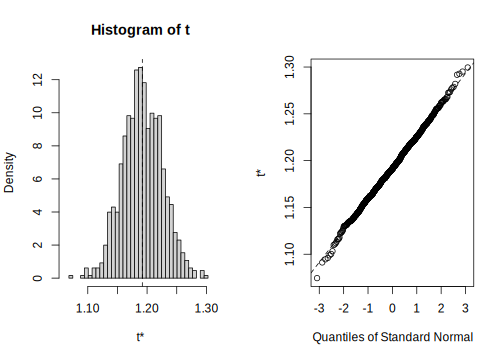

3.10 Bootstrapping the simple linear regression
A non-parametric test for the intercept and slope of a linear regression can be obtained by bootstrapping.
# load boot
library(boot)
# function to obtain regression weights
bs <- function(formula, data, indices) {
d <- data[indices, ] # allows boot to select sample
fit <- lm(formula, data = d)
return(coef(fit))
}
# bootstrapping with 1000 replications
results <- boot(
data = sturgeon.male,
statistic = bs,
R = 1000, formula = log10(fklngth) ~ log10(age)
)
# view results
results##
## ORDINARY NONPARAMETRIC BOOTSTRAP
##
##
## Call:
## boot(data = sturgeon.male, statistic = bs, R = 1000, formula = log10(fklngth) ~
## log10(age))
##
##
## Bootstrap Statistics :
## original bias std. error
## t1* 1.1919926 2.047182e-04 0.03407102
## t2* 0.3408557 -5.496442e-05 0.02699320For each parameter in the model (here the intercept is labeled t1\* and the slope of the regression line is labeled t2\*) , you obtain:
Pour chaque paramètre du modèle (ici l’ordonnée à l’origine est
appelée t1* et la pente de la régression t2\*), R imprime :
originaloriginal parameter estimate (on all non-bootstrapped data)biasthe difference between the mean value of all bootstrap estimates and the original valuestd. errorstandard error of the bootstrap estimate
par(mfrow = c(2, 2))
plot(results, index = 1) # intercept
plot(results, index = 2) # log10(age)
The distribution of the bootstrapped estimates is rather Gaussian, with only small deviations in the tails (where it counts for confidence intervals…). One could use the standard error of the bootstrap estimates to calculate a symmetrical confidence interval as mean +- t SE. But, given that R can as easily calculate a bias-corrected adjusted (BCa) confidence interval, or one based on the actual distribution, (Percentile) why not have it do it all:
# interval de confiance pour l'ordonnée à l'origine
boot.ci(results, type = "all", index = 1)## Warning in boot.ci(results, type = "all", index = 1): bootstrap variances needed
## for studentized intervals## BOOTSTRAP CONFIDENCE INTERVAL CALCULATIONS
## Based on 1000 bootstrap replicates
##
## CALL :
## boot.ci(boot.out = results, type = "all", index = 1)
##
## Intervals :
## Level Normal Basic
## 95% ( 1.125, 1.259 ) ( 1.123, 1.256 )
##
## Level Percentile BCa
## 95% ( 1.128, 1.261 ) ( 1.118, 1.252 )
## Calculations and Intervals on Original Scale# intervalle de confiance pour la pente
boot.ci(results, type = "all", index = 2)## Warning in boot.ci(results, type = "all", index = 2): bootstrap variances needed
## for studentized intervals## BOOTSTRAP CONFIDENCE INTERVAL CALCULATIONS
## Based on 1000 bootstrap replicates
##
## CALL :
## boot.ci(boot.out = results, type = "all", index = 2)
##
## Intervals :
## Level Normal Basic
## 95% ( 0.2880, 0.3938 ) ( 0.2890, 0.3936 )
##
## Level Percentile BCa
## 95% ( 0.2881, 0.3927 ) ( 0.2920, 0.3974 )
## Calculations and Intervals on Original ScaleHere the 4 types of CI that R managed to calculate are essentially the same. Had data been violating more strongly the standard assumptions (normality, homoscedasticity), then the different methods (Normal, Basic, Percentile, and BCa) would have diverged more. In that case, which one is best? BCa has the favor of most, currently.